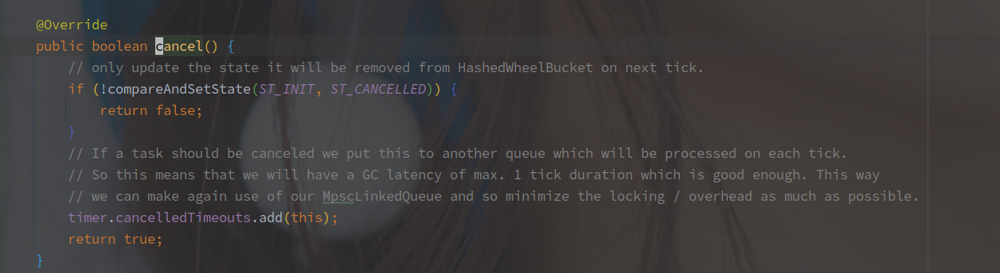

HashedWheelTimer 源码分析
2021/10/09
概述
HashedWheelTimer 是 Netty 中实现的时间轮结构（在Kafka，Akka，Zookeeper 中都有时间轮的实现。
时间轮的主要作用就是存储并调度延时任务。
JDK 的 ScheduledThreadPoolExecutor 使用的是小顶堆（二叉树）来完成任务的延时调度。
存放的时候以执行时间作为排序依据，每次判断堆顶任务是否到期来确定是否需要调度执行，相对于时间轮来说，小顶堆的维护更加复杂，接近 O(logN) 的复杂度。
时间轮的整体结构如下：

（盗我杰哥一个图。
时间轮可以简单看作一个环形队列，队列中每个 Bucket（槽或者桶，怎么叫都行），都保存了一个任务链表，另外的每个槽位代表一定的时间跨度，时间到了之后将槽内的任务全部取出来执行。
添加任务的时候需要根据执行的时间，将任务插入到不同的槽位，然后等待具体的调度时间。
因为是以槽作为一个调度时间单位，所以时间轮的精度就不会太高，另外的事件轮中需要使用单个线程去遍历整个环形队列，取出任务。
HashedWheelTimer 的基本结构
HashedWheelTimer 的主要成员变量如下：

含义分别如下：
| 参数名 | 含义 |
|---|---|
| tickDuration | 每个桶表示的时间间隔，单位为ms |
| workerThread | 用来转动时间轮，获取任务的工作线程 |
| workerState | 当前时间轮状态 |
| wheel | 时间轮的真实实现，使用数组 + mod 的形式组成一个循环队列 |
| mask | HashedWheelTimer 中要求桶的数量必须为2次幂，mask 等于 2^n - 1，用于计算桶的下标 |
| timeouts | 任务的暂存队列，其中的任务（timeout）会被工作线程插入到轮中 |
| cancelledTimeouts | 取消的任务队列，也是暂存区 |
| pendingTimeouts | 正在等待入时间轮的任务数 |
| startTime | 对齐时间，HashedWheelTimer 中计算桶的下标的形式就是 ((当前时间 - 对齐时间)) / tickDuration & mask 经过 n 个 tick 时间就变成了 startTime + tickDuration * tick |
时间轮的结构
指保存任务和执行时间的结构。
HashedWheelTimer 中保存了 HashedWheelBucket 的数组，作为任务的存储结构（就是上述环形队列的简单实现。

其中单个 Bucket 的表示是其内部类 HashedWheelBucket，结构如下：

HashedWheelBucket 中持有任务 HashedWheelTimeout 的头尾节点，相当于持有当前 Bucket 的任务链表，以下是 HashedWheelTimer 的结构：

HashedWheelTimer 中所以的定时任务都会被包装为 HashedWheelTimeout，自身通过前驱（prev）和后继（next）节点组成了一个双向的链表。
相关参数含义如下：
| 参数名 | 含义 |
|---|---|
| next / prev | 链表的前驱和后继 |
| deadline | 与时间轮启动时间对齐的相对执行时间 |
| remainingRounds | 剩余的轮次，每个轮次表示时间轮转动一周，每次访问到该节点算是一个轮次 |
| state | 任务状态 |
| task | 需要执行的任务 |
HashedWheelTimer 中整个时间轮的结构就是双向链表组成的数组，数组中每个元素就是所谓的 Bucket，任务保存在双向链表中。
时间轮的开启流程
HashedWheelTimer 在第一次添加任务的时候或者手动调用 start() 方法开启工作线程（也就启动了时间轮。
以下是 HashedWheelTimer#start() 方法实现：

简单逻辑就是替换当前 Worker 线程的状态，并启动线程。
主要还是后面的 await，在工作线程启动前阻塞当前线程。
不是很明确这里的原因，具体的目的就是添加任务的线程需要等待工作线程先启动（不确定。
时间轮的任务调度（转动）流程
（就是时间轮每次轮转需要执行的逻辑分析。
HashedWheelTimer 中包含一个 Worker 线程，来负责期间的任务调度等逻辑。
Worker 线程中有一个非常关键的变量：

unprocessedTimeouts 用来存储在关闭 HashedWheelTimer 时来不及执行的任务。
tick 是一个逻辑时钟周期，每次经过 tickDuration 的时间 tick 会 +1，时间轮就是根据这个变量确定当前应该从哪个 Bucket 中获取任务。
tick 非常重要，时间轮的一个轮次只能表示一定的时间，比如 tickDuration = 1000，并且有60个桶时，一个轮次只代表一分钟，所以10分钟之后的任务的 tick = 当前的 tick + 10。
以下是 HashedWheelTimer$Worker#run 的实现（Worker 肯定是继承 Runnable 的：
@Override
public void run() {
// 初始化时间轮开始执行的时间
startTime = System.nanoTime();
if (startTime == 0) {
// We use 0 as an indicator for the uninitialized value here, so make sure it's not 0 when initialized.
startTime = 1;
}
// 唤醒在 start() 方法中被阻塞的线程
// CountDownLatch 先执行 countDown 之后，await 也不会阻塞了
startTimeInitialized.countDown();
// 以下就是主要的轮询任务逻辑
do {
// 睡眠直到下次任务时间到
final long deadline = waitForNextTick();
// 方法中的定义,deadline为负表示下次任务已经到期
if (deadline > 0) {
// tick表示当前轮次
// 求出应该执行任务的桶下标
int idx = (int) (tick & mask);
// 清空取消的任务
processCancelledTasks();
// 取出桶
HashedWheelBucket bucket = wheel[idx];
// 处理timeouts中的任务，将其分配到具体的桶中
transferTimeoutsToBuckets();
// 执行bucket中的所有任务
bucket.expireTimeouts(deadline);
// 时钟周期+1
tick++;
}
// 判断工作状态来确定好似否
} while (WORKER_STATE_UPDATER.get(HashedWheelTimer.this) == WORKER_STATE_STARTED);
// 到这里就表示 HashedWheelTimer 就被关了
// Fill the unprocessedTimeouts so we can return them from stop() method.
// 收集未执行的任务
for (HashedWheelBucket bucket : wheel) {
bucket.clearTimeouts(unprocessedTimeouts);
}
for (; ; ) {
HashedWheelTimeout timeout = timeouts.poll();
if (timeout == null) {
break;
}
if (!timeout.isCancelled()) {
unprocessedTimeouts.add(timeout);
}
}
// 清空取消的任务
processCancelledTasks();
}
HashedWheelTimer 中任务调度线程的执行逻辑如下：
- 等待一个 tickDuration 的时间（Thread.sleep() 方法实现挂起）
- 计算当前时间对应的桶的下标（tick & mask，tick = currtime - startTime / tickDuraction
- 处理所有取消的任务（将取消的任务从时间轮中去除
- 获取当前的桶
- 处理暂存区（timeouts）的任务，计算对应的桶的下标和 需要等待的轮次（remainingRounds），并插入桶中（最多一次 100000 个任务
- 执行到期任务（根据 tick 和 deadline 获取到期的任务，两样都是小于等于是到期，取消则删除，未到轮次建议
- 状态未关闭则继续到流程 1，关闭则遍历所有集合的任务并取消
HashedWheelTimer 使用了 cannelTimeouts 和 timeouts 两个队列来作为暂存区保存对应的任务，由单线程来进行调度（出入时间轮，主要应该还是并发安全考虑。
另外需要注意，HashedWheelTimer 中任务的执行是单线程的（除非在 TimerTask 中使用线程池去执行），所以执行可能会拖慢下次的任务调度。
（接下来细聊一些实现。
处理取消任务

取消任务的实现就是从队列里面获取 timeout，并且逐个的 remove。
没有上限，是不是也有数量过多的风险，毕竟单线程的执行。
remove 的方法实现如下：

存在 bucket 表示已经加入到时间轮需要从时间轮中删除。
往时间轮中插入任务
/**
* 将timeouts中的任务移动到桶中,最多移动 1000000 个
*/
private void transferTimeoutsToBuckets() {
for (int i = 0; i < 100000; i++) {
HashedWheelTimeout timeout = timeouts.poll();
// 没有任务了
if (timeout == null) {
break;
}
// 任务被取消了
if (timeout.state() == HashedWheelTimeout.ST_CANCELLED) {
continue;
}
// 任务的 deadline 是任务真实的执行时间和 startTime 对齐的时间
// tickDuration 表示的是一个槽位的时间
// 所以 calculated 表示的是任务执行的逻辑时钟
long calculated = timeout.deadline / tickDuration;
// tick 表示当前的逻辑时钟周期
// remainingRounds 表示的是时间轮的完整轮次
// 当前是第一次，每次转到之后 remainingRounds 减1，到0的时候表明时间到了
timeout.remainingRounds = (calculated - tick) / wheel.length;
// 如果tick大说明任务执行时间已经过了,所以当前轮次就需要执行
// 如果任务的时钟周期比当前的短，则直接在当前的时钟执行
final long ticks = Math.max(calculated, tick); // Ensure we don't schedule for past.
// 计算插入的桶的下标
int stopIndex = (int) (ticks & mask);
// 插入到桶中
HashedWheelBucket bucket = wheel[stopIndex];
bucket.addTimeout(timeout);
}
}
插入任务时需要确定两个参数，任务对应的桶的下标以及剩余需要等待的轮次。
下标使用目标的逻辑时间 & mask 计算，而剩余的轮次则是间隔的时间 / 桶的大小。
执行到期的任务
以下是 HashedWheelTimer$HashedWheelBucket#expireTimeouts 的方法实现：
/**
* Expire all {@link HashedWheelTimeout}s for the given {@code deadline}.
* 执行桶中的到期任务
*/
public void expireTimeouts(long deadline) {
HashedWheelTimeout timeout = head;
// 这里需要遍历整个链表
while (timeout != null) {
HashedWheelTimeout next = timeout.next;
// 当前的执行轮次
if (timeout.remainingRounds <= 0) {
// 先从链表中删除
next = remove(timeout);
if (timeout.deadline <= deadline) {
// 执行任务
timeout.expire();
} else {
// The timeout was placed into a wrong slot. This should never happen.
throw new IllegalStateException(String.format(
"timeout.deadline (%d) > deadline (%d)", timeout.deadline, deadline));
}
} else if (timeout.isCancelled()) {
// 任务已经被取消，从链表中删除
next = remove(timeout);
} else {
// 任务需要等待的轮次减1
timeout.remainingRounds--;
}
timeout = next;
}
}
整个执行过程就是遍历桶中所有的任务，状态正常并且剩余轮次小于等于0就可以执行。
剩余轮次大于0的需要递减，已便后续执行。
取消的任务直接从链表中剔除。
添加定时任务
往 HashedWheelTimer 中添加任务，以下是 HashedWheelTimer#newTimeout 的源码实现：
@Override
public Timeout newTimeout(TimerTask task, long delay, TimeUnit unit) {
// 前置的参数检查
ObjectUtil.checkNotNull(task, "task");
ObjectUtil.checkNotNull(unit, "unit");
// 当前等待的任务数+1
long pendingTimeoutsCount = pendingTimeouts.incrementAndGet();
// maxPendingTimeouts 默认为-1，表示无上限
if (maxPendingTimeouts > 0 && pendingTimeoutsCount > maxPendingTimeouts) {
pendingTimeouts.decrementAndGet();
throw new RejectedExecutionException("Number of pending timeouts ("
+ pendingTimeoutsCount + ") is greater than or equal to maximum allowed pending "
+ "timeouts (" + maxPendingTimeouts + ")");
}
// 开启时间轮
start();
// 任务执行的时间
// 不是真实的时间，需要于 startTime 对齐
long deadline = System.nanoTime() + unit.toNanos(delay) - startTime;
// Guard against overflow.
if (delay > 0 && deadline < 0) {
deadline = Long.MAX_VALUE;
}
// 包装为 HashedWheelTimeout
HashedWheelTimeout timeout = new HashedWheelTimeout(this, task, deadline);
// 保存到 timeouts
timeouts.add(timeout);
return timeout;
}
整个添加的过程除了基本的检查就是往 timeouts 中添加。

timeouts 就是一个简单的任务队列，此时并没有往时间轮中插入任务。
具体的插入到桶其实是通过时间轮的工作线程来完成的。
单线程的进行桶中任务的添加可以完全避免上锁的问题，避免任务调度期间因为插入过于频繁而导致的迟滞。
取消定时任务
在添加任务的时候会返回一个 HashedWheelTimeout 的对象，包含需要执行的 Task 任务以及 deadline 等信息，该对象用于查询以及控制任务的状态。
该对象继承于 Timeout 接口，所以提供了以下方法实现：

获取包装的 HashedWheelTimeout 对象，获取任务，是否到期，是否取消，以及取消方法。
cancel 方法的实现也很简单，源码如下：

CAS 替换任务状态并且将任务添加到 cancelledTimeouts 的队列中，就可以了。
后续的从时间轮移除的步骤将在 Worker 线程中完成。
总结
时间轮的基本实现
时间轮使用一个环形数组存储定时任务，每个 Bucket 表示一段时间，在由单线程负责从 Bucket 获取到期的任务并执行（执行可以使用线程池。
因此时间轮存在以下几个明显的问题：
- 定时时间不够精细（基本上由 Bucket 表示的时间单位决定
- 代表的时间范围有限（环形数组长度 * Bucket Time Unit
- 任务量少时，存在频繁空轮询的问题。
在时间范围有限的问题上，可以使用多级时间轮或者类似 Netty 的 tick 表示具体轮次来解决。
空轮询的问题，可以使用 DelayQueue 来调度最近任务时间。
HsahedWheelTimer 的实现：
HashedWheelTimer 使用 Bucket 表示一小段事件，整个时间轮表示大段的事件，超出的部分使用 tick（轮次）表示（表示的间隔有限是时间轮最明显的缺点。
通过工作线程（Worker）定时对数组以及其上的链表的遍历获取到期的任务并执行，时间到了之后会将桶的任务迁移到中间数组中，后续遍历执行。
添加和删除任务都是多线程入队列（入缓冲队列，由工作线程单线程遍历缓冲队列，在插入或移除出时间轮。
（直观来看，Netty 的实现感觉上更像是 EventLoop 的形式。
对比 JDK 原生 ScheduledThreadPoolExecutor 和 Netty 的 HashedWheelTimer 实现：
ScheduledThreadPoolExecutor 使用堆来保存队列，获取的事件复杂度为O(1)，但是维护确实O(LogN)，所以在任务数多的时候会出现性能降低的问题，而时间轮采用数组+链表的实现，维护和插入成本极低，就是在执行时需要遍历全部的链表。
个人看来 HashedWheelTimer 会更适合于短定时多任务的场景。
另外 HashedWheelTimer 中的任务依靠单个 Worker 线程执行，所有在耗时任务中需要另起线程异步执行（或者使用额外使用线程池，而 ScheduledThreadPoolExecutor 自身就是依托于线程池实现的，依靠于阻塞队列完成任务的调度。
Netty 中单层时间轮的缺点：
- 在任务量少的时候存在空轮询的情况（这个完全可以避免
- 任务量多的时候，单个 Bucket 可能保存过多的任务，遍历效率低下。